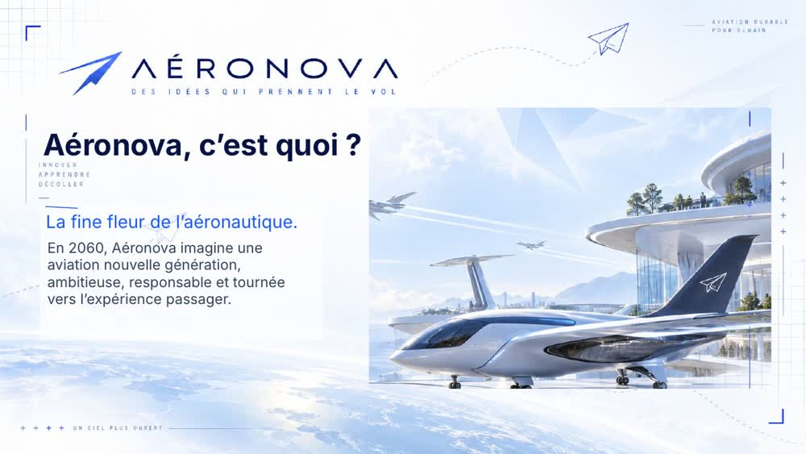
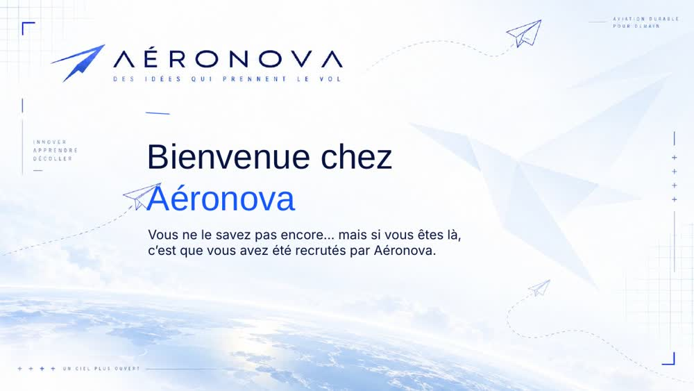
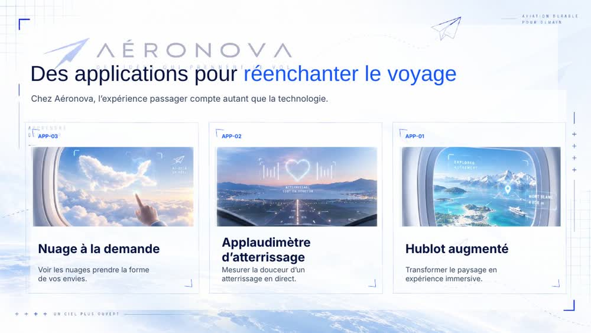
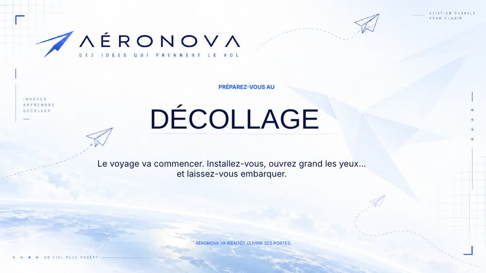
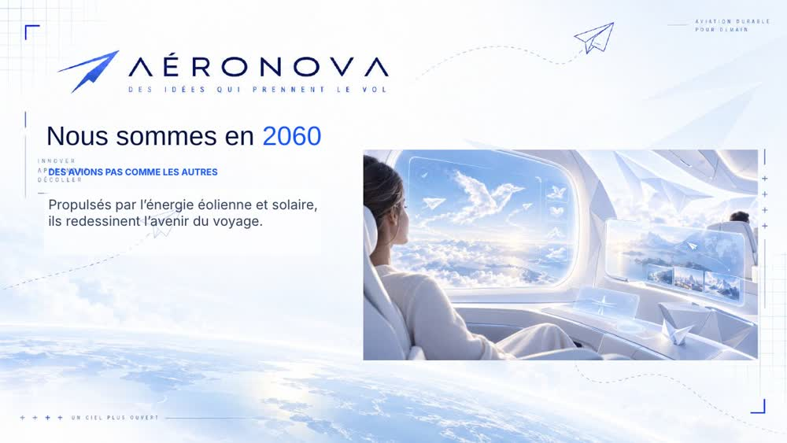

Bienvenue chez Aéronova : la vidéo qui ouvre la partie
Une vidéo d'environ deux minutes, diffusée au lancement de la séance, qui plonge les joueurs dans l'univers d'Aéronova et leur explique ce qui va se passer — sans dévoiler ce qu'ils doivent découvrir en jouant.
Durée
≈ 1 min 55
Format
16:9
Scènes
7
Voix off
à choisir
Ce qui est demandé : valider le découpage, le texte du narrateur, le style visuel et le ton d'une réplique (page 6). Les points de cohérence avec les supports du jeu sont déjà tranchés. La voix et la production viendront ensuite.

Innover · Apprendre · Décoller1 / 6
A É R O N O V A · MISSION FLOW
L'intention
Ce que la vidéo dit, et ce qu'elle garde secret
Elle dit
L'univers : Aéronova en 2040, des avions qui volent au vent et au soleil, une entreprise obsédée par l'expérience passager.
Quelques applications pour donner le ton (nuage à la demande, applaudimètre d'atterrissage, hublot augmenté).
Les cinq pôles et leur rôle : Business, Développement, Test, Release, Mise en production.
Comment circule une fiche APP : un défi à résoudre, une validation sur la tablette, puis la fiche portée au pôle suivant.
Le suivi en direct sur le grand écran, le format (3 manches de 15 minutes avec un temps de recul), et le fait que les échanges et déplacements sont autorisés.
L'objectif : mettre en service un maximum d'applications.
Elle ne dit pas (consignes du guide animateur)
Les aides croisées entre pôles : leur intérêt doit être découvert par les joueurs.
La stratégie et les limites de travail en cours.
La différence entre « lancer » et « mettre en service », qui nourrit le premier débrief.
Le montant du budget : il n'est pas encore confirmé et c'est l'animateur qui l'annonce.
Sources
Drive « Mission Flow » : Brief Mission Flow (PowerPoint), Guide animateur – version simple, Guide participants à imprimer, Jeu de cartes. Le texte s'appuie sur ces documents ; les écarts relevés entre eux ont été tranchés (page 6).
Innover · Apprendre · Décoller2 / 6
A É R O N O V A · MISSION FLOW
Découpage · scènes 1 à 4
Le découpage scène par scène
01
0:00 – 0:12
Narrateur
« Bonjour, et bienvenue chez Aéronova. Vous ne le savez pas encore… mais si vous êtes ici, c'est que vous venez d'être recrutés. »
À l'image
Mer de nuages au lever du jour. Un avion en papier traverse l'écran en laissant un pointillé, puis se pose dans le logo : AÉRONOVA — Des idées qui prennent le vol.

Référence : brief, diapo 1
02
0:12 – 0:30
Narrateur
« Nous sommes en 2040. Aéronova est la fine fleur de l'aéronautique. Ses avions nouvelle génération, les Folding Planes, volent grâce au vent et au soleil : des avions enfin respectueux de la planète. »
À l'image
Un compteur d'années défile jusqu'à 2040. Lent travelling sur le Folding Plane devant son terminal ; de fines lignes dessinent le vent et le soleil qui l'alimentent.
Référence : brief, diapo 2
03
0:30 – 0:55
Narrateur
« Mais chez Aéronova, le voyage compte autant que l'avion. Alors l'entreprise invente des applications pour les passagers. Un nuage à la demande, qui prend la forme de vos envies. Un applaudimètre, qui acclame le pilote à l'atterrissage… même quand c'est un peu secoué. Un hublot augmenté, pour survoler la savane ou l'Australie. Et des dizaines d'autres idées. »
À l'image
La cabine. Trois fiches APP s'ouvrent comme des écrans de tablette, chacune animée : le nuage devient un dragon ; l'aiguille de l'applaudimètre saute de « poli » à « stade de football » ; le hublot glisse de la savane à l'Australie. Puis un éventail d'autres fiches (Caféjector, Turbulence DJ, Bras à snacks…).

Référence : brief, diapo 4
04
0:55 – 1:03
Narrateur
« Ces applications, c'est vous — oui, vous — qui allez les faire décoller. »
À l'image
Les fiches se replient en un seul avion en papier qui fonce vers la caméra. Une demi-seconde de silence avant « oui, vous ».
Esquisse
Innover · Apprendre · Décoller3 / 6
A É R O N O V A · MISSION FLOW
Découpage · scènes 5 à 7
Le découpage scène par scène
05
1:03 – 1:38
Narrateur
« Vous rejoignez l'un des cinq pôles d'Aéronova. Le Business choisit les applications à lancer et engage le budget. Le Développement construit la solution. Le Test vérifie qu'elle tient ses promesses. La Release prépare la livraison. Et la Mise en production fait entrer l'application en service, à bord. À chaque étape, un défi vous attend. Vous le résolvez, vous validez sur la tablette… puis vous portez la fiche au pôle suivant. »
À l'image
Une ligne de vol en pointillés avec cinq escales : BIZ, DEV, TEST, RELEASE, PROD. Une fiche APP voyage d'escale en escale ; à chaque arrêt, un aperçu du défi sans le résoudre : cartes transparentes superposées (DEV), pastilles vert / jaune / rouge d'un code (TEST), grille de lettres (RELEASE), énigme en un mot (PROD). Sur « vous validez », le geste « Valider et transmettre » sur une tablette ; puis la fiche glisse vers l'escale suivante.
Esquisse
06
1:38 – 1:52
Narrateur
« Sur le grand écran, toute l'entreprise suit en direct le voyage de chaque application. Vous jouerez trois manches de quinze minutes, avec un temps pour prendre du recul entre chacune. Les échanges et les déplacements sont autorisés. »
À l'image
Le grand écran de la salle : un tableau de bord épuré (applications en route, applications en service). Une application passe en service : petite célébration. Puis une frise : trois manches de 15 minutes séparées par des temps de débrief.
Esquisse
07
1:52 – 2:02
Narrateur
« Votre mission : mettre en service un maximum d'applications. Installez-vous, ouvrez grand les yeux… et préparez-vous au décollage. »
À l'image
Le compteur « applications en service » s'emballe ; l'avion en papier décolle à travers les nuages. Carton final repris du brief : PRÉPAREZ-VOUS AU DÉCOLLAGE.

Référence : brief, diapo 5
Environ 250 mots, soit ≈ 1 min 40 de voix à un débit posé ; avec les respirations et les moments sans voix (logo, décollage), ≈ 1 min 55 au total.
Innover · Apprendre · Décoller4 / 6
A É R O N O V A · MISSION FLOW
Style visuel
Style proposé : « Ciel clair 2040 »
La vidéo reprend l'identité du brief PowerPoint, pour que la vidéo et les supports du jeu ne fassent qu'un.
Bleu électrique#1557FF · accents
Bleu nuit#071342 · titres
Ardoise#31405B · texte
Bleu pâle#B9D3FF · traits
Ambiance : blanc et bleu ciel très clair, mer de nuages vue d'en haut, lumière douce, beaucoup d'espace.
Fil rouge, l'avion en papier : déjà symbole du logo et clin d'œil aux Folding Planes. Il ouvre la vidéo, relie les scènes par sa trajectoire en pointillés, devient la fiche APP qui voyage entre les pôles, puis décolle à la fin.
Détails graphiques du brief : coins de cadrage fins, trajectoires en pointillés, petites mentions en capitales espacées.
Images : les visuels du brief (l'avion, la cabine, les applications) animés par de lents mouvements de caméra. Des visuels supplémentaires dans le même style peuvent être générés pour d'autres applications.
Partie « comment on joue » : motion design épuré plutôt qu'images réalistes, pour rester lisible.
Typographie : sans-serif nette et moderne, proche de celle du brief.
Musique (plus tard) : électro légère et lumineuse, qui monte vers le décollage.

Le brief actuel, dont la vidéo reprend l'identité (il affiche encore 2060 : à passer en 2040).
Innover · Apprendre · Décoller5 / 6
A É R O N O V A · MISSION FLOW
À valider
Ce qu'il reste à valider
Sujet
Proposition
Décision
Remarques
Découpage et texte
Les 7 scènes et le texte du narrateur des pages 3 et 4, ≈ 1 min 55.
ValidéÀ revoir
Style visuel
« Ciel clair 2040 », dans l'identité du brief, avec l'avion en papier comme fil rouge.
ValidéÀ revoir
Ton de l'applaudimètre
La fiche mesure la douceur de l'atterrissage. Le texte prend un ton complice : il « acclame le pilote… même quand c'est un peu secoué ».
ValidéÀ revoir
Déjà décidé
L'année
2040, comme le guide des participants et les cartes. Le brief PowerPoint, qui affiche 2060, est à aligner.
Les avions
Des Folding Planes propulsés par l'énergie éolienne et solaire.
Les applications
Le kit en compte 25 ; le texte dit « des dizaines d'autres idées ».
L'objectif
« Mettre en service un maximum d'applications », comme le guide animateur.